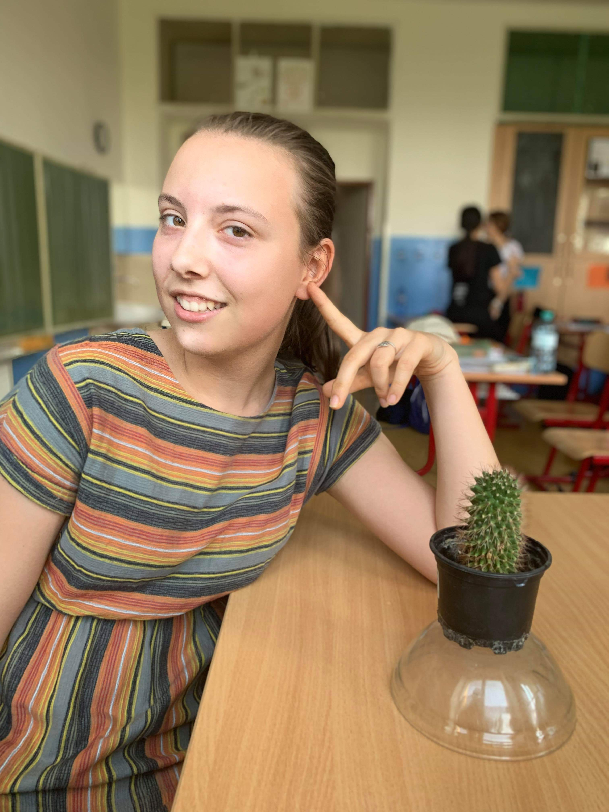
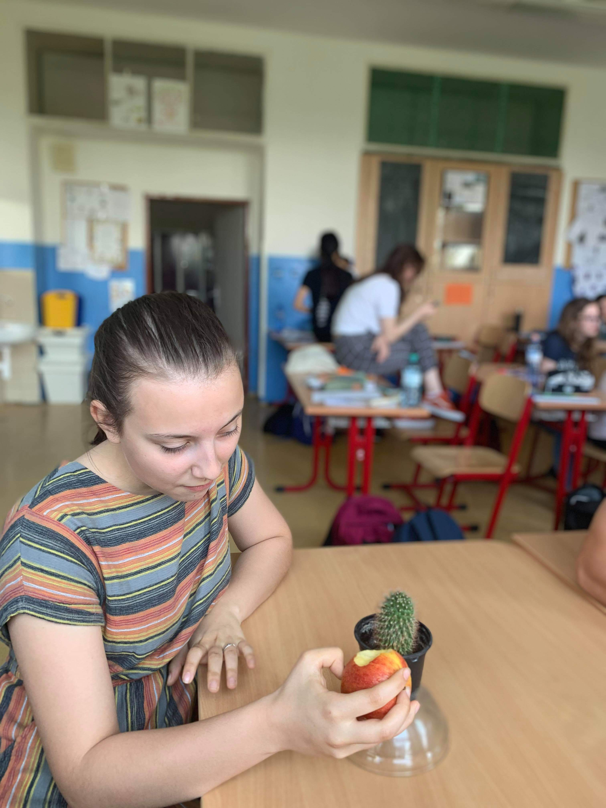
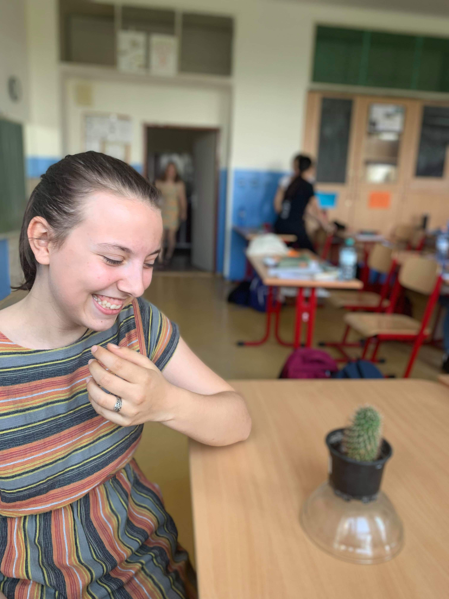

MY
PECULIAR
ADDICTION
I LOVE MY CACTUS!
Lea Jozka Geciova, aged 14, is in a "serious relationship" with her tiny barrel cactus
Lea is a self-declared plant sexual. she is therefore attracted to plants. After a ten year relationship with Joshy, her cactus, she came out to her family.
Her family doesnt accept or understand her yet. "It will be a long process, before my fam will accept me," she said in a recent interview.
She has planned to go to Joshua Tree national Park in California with Joshy, to visit his distant family. Apparently they go every weekend to Rhapis flower shop to commemorate their meeting.
"He isn't very communicative around others," she said. "However in bed he is quite a savage."
Lea continues to fight for plant rights and plant marriage.
We've never seen creatures so perfect for each other. We wish them lots of luck and happiness!